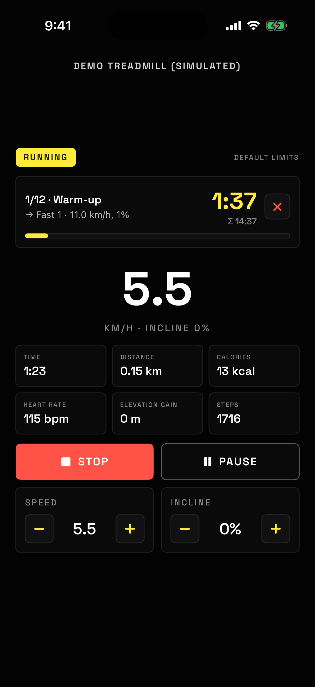
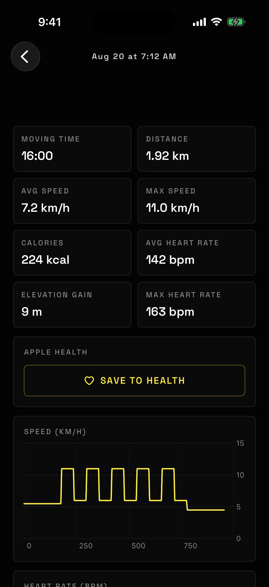
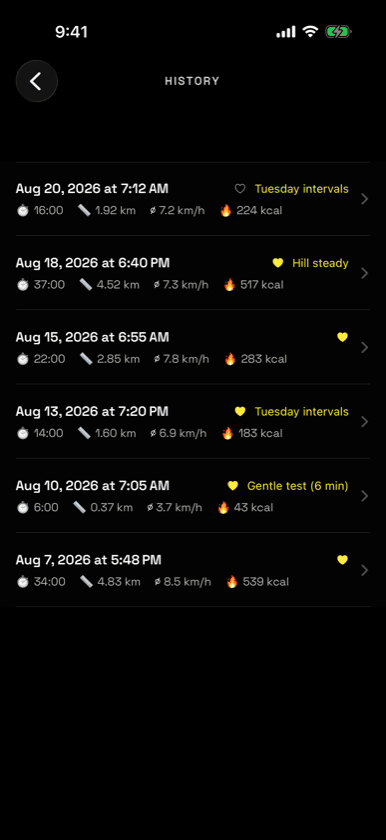
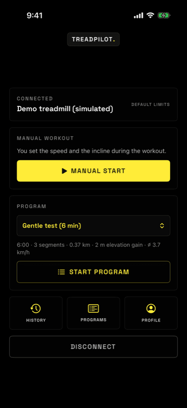
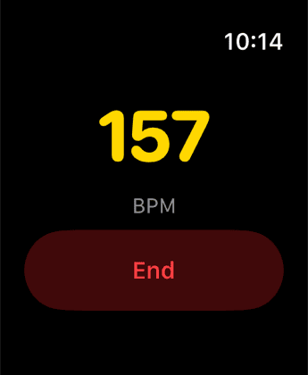
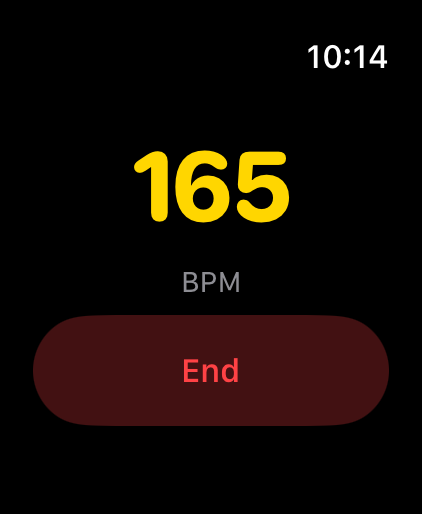
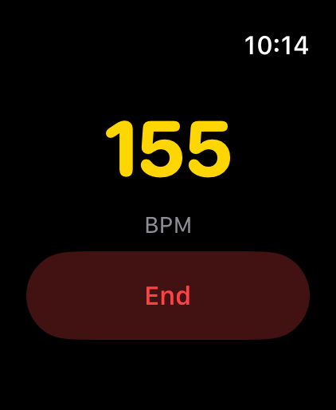
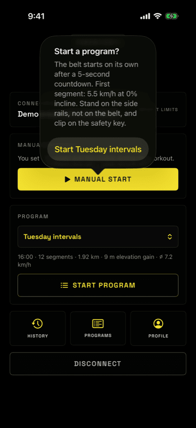
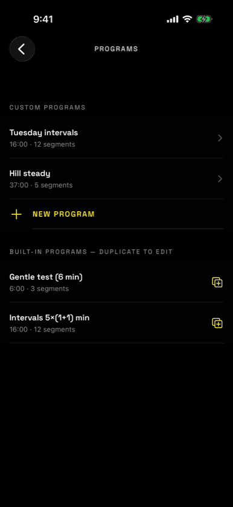
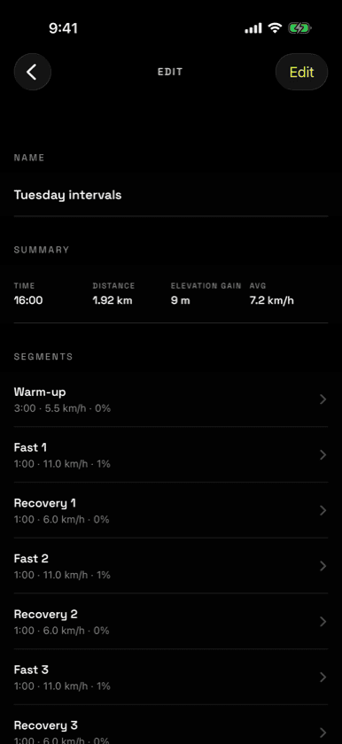

TreadPilot connects to FitShow-protocol treadmills over Bluetooth and takes the wheel: live numbers, interval programs that drive the belt for you, Apple Watch heart rate, and every run saved to Apple Health.







No account, no cloud, no subscription. Just your phone and the machine in front of you.
The app finds your treadmill over Bluetooth and pairs in seconds.
Speed, incline, distance, calories, steps and elevation, live every second.
Intervals that drive the belt for you — warm up, push, recover, cool down.
Elevation gain from speed and incline. Heart rate straight off your Apple Watch. Calories from your real body data, not a generic guess. Every session charted and kept — and written into Apple Health where the rest of your training lives.

TreadPilot starts and drives a real treadmill belt. It never starts without your explicit confirmation, and programmed starts always run a countdown you can cancel. Stand on the side rails, not on the belt, and clip on the safety key. If the Bluetooth link drops, the belt may keep running at the last set speed — your treadmill's own stop button and safety key remain your primary protection.
Six screens is the whole app. Here is every one of them, in the order you will meet them.
Switch the console on and open TreadPilot — it finds your treadmill over Bluetooth and pairs in seconds. Then one question: drive the belt yourself, or let a program do it?
No treadmill yet? Demo mode runs the whole app on a simulated belt.
Everything on one screen: the current segment counting down at the top, your speed in the middle, and the six numbers that matter underneath. Stop and pause stay within thumb reach.
Wearing an Apple Watch? Your heart rate appears here on its own.

Built-in programs to start from, and your own below them. Duplicate any built-in to make it yours — the originals stay untouched.

Add segments, set a target speed and incline for each, and the summary recalculates as you type — total time, distance, elevation gain and average speed, before you ever step on.
When the belt stops you get a summary, and the workout goes into Apple Health with distance, energy, heart rate and elevation. Automatically, or with one tap.
Missed a sync? Open the workout later and save it from here.
Every session stays on your phone with speed and heart-rate charts. A filled heart means it is already in Apple Health; an outline means one tap will put it there.
Nothing is uploaded anywhere. Your history lives on your device.
GPL-3.0 licensed. No telemetry, no dependencies, no dark corners. The Bluetooth protocol is documented in the source byte by byte — so nobody has to reverse-engineer this console again.
# Build it yourself git clone https://github.com/backloghu/treadpilot brew install xcodegen xcodegen generate # FitShow frame layout 0x02 │ CMD │ DATA… │ XOR-FCS │ 0x03 # Target 9.0 km/h @ 2% incline 02 53 02 5A 02 0B 03